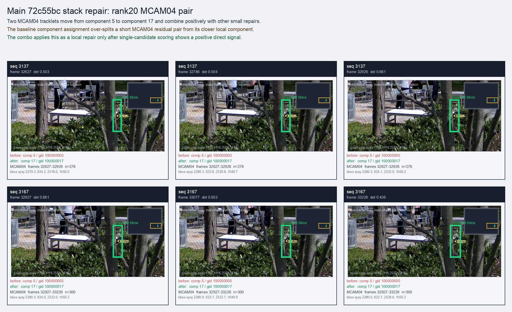

Main 72c55bc stack repair: rank20 MCAM04 pair
Two MCAM04 tracklets move from component 5 to component 17 and combine positively with other small repairs.
Before
component 5, gid 100000005, component_size 293
component 5, gid 100000005, component_size 293
After
component 17, gid 100000017, component_size 53, decision_status subpart_reassign_combo
component 17, gid 100000017, component_size 53, decision_status subpart_reassign_combo
Evidence
target_sim=0.6347, target_margin=0.1150, source_rest_margin=0.4906
Raw frame
available
target_sim=0.6347, target_margin=0.1150, source_rest_margin=0.4906
Raw frame
available
Failure and fix
Old failure: The baseline component assignment over-splits a short MCAM04 residual pair from its closer local component.
New implementation: The combo applies this as a local repair only after single-candidate scoring shows a positive direct signal.
BBox evidence

Moved tracklets
| seq | video | gid | component | frames | dets |
|---|---|---|---|---|---|
| 3137 | vlincs_MS01_MC0001_MCAM04_2024-03-Tc6 | 100000005 -> 100000017 | 5 -> 17 | 32627-32926 | 278 |
| 3167 | vlincs_MS01_MC0001_MCAM04_2024-03-Tc6 | 100000005 -> 100000017 | 5 -> 17 | 32927-33226 | 300 |